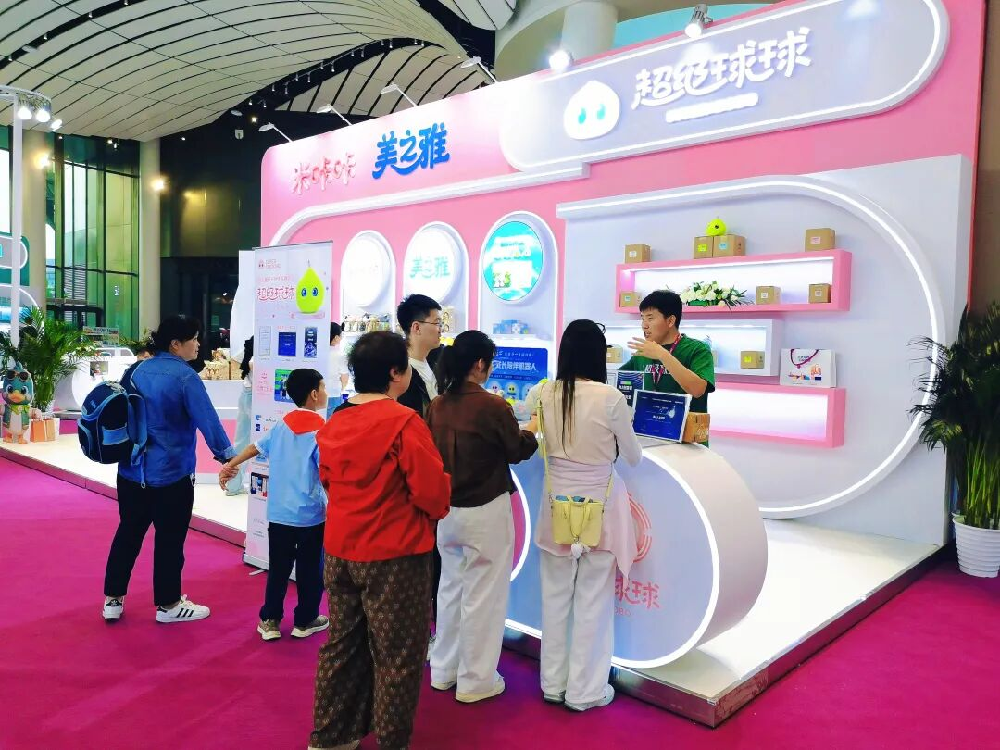
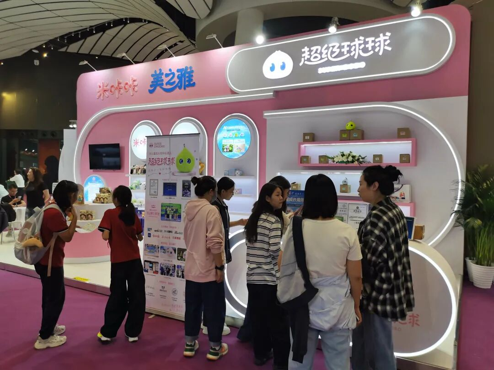
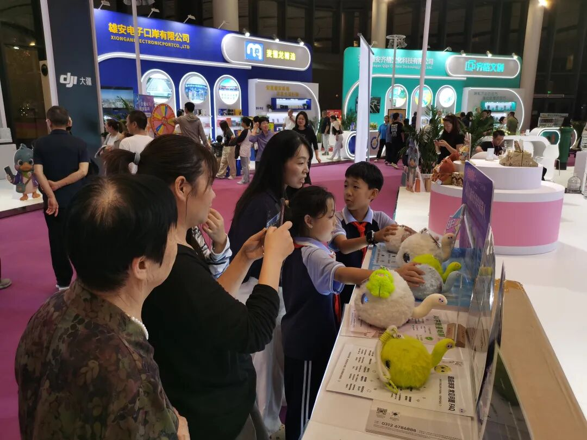
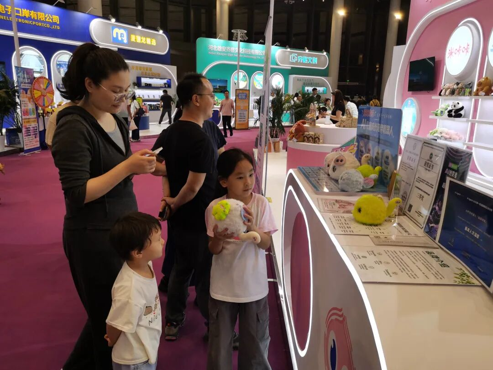
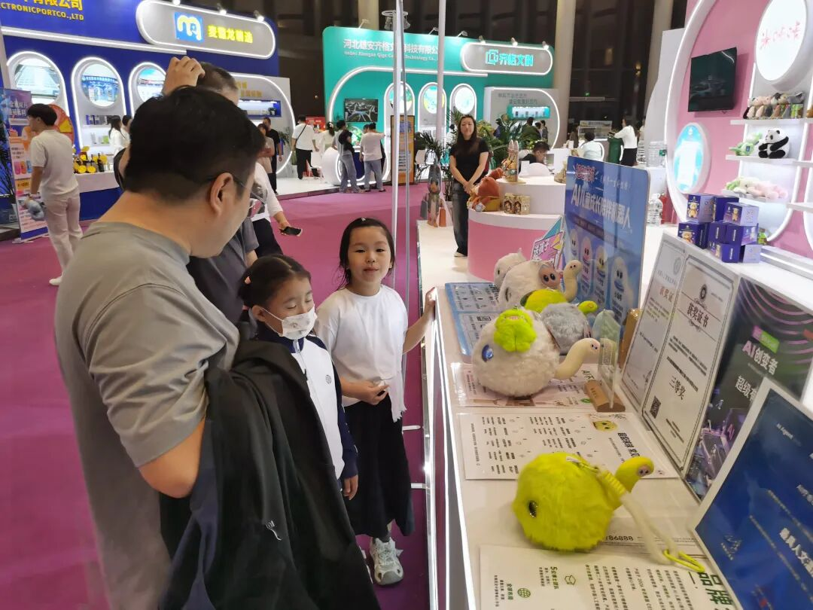
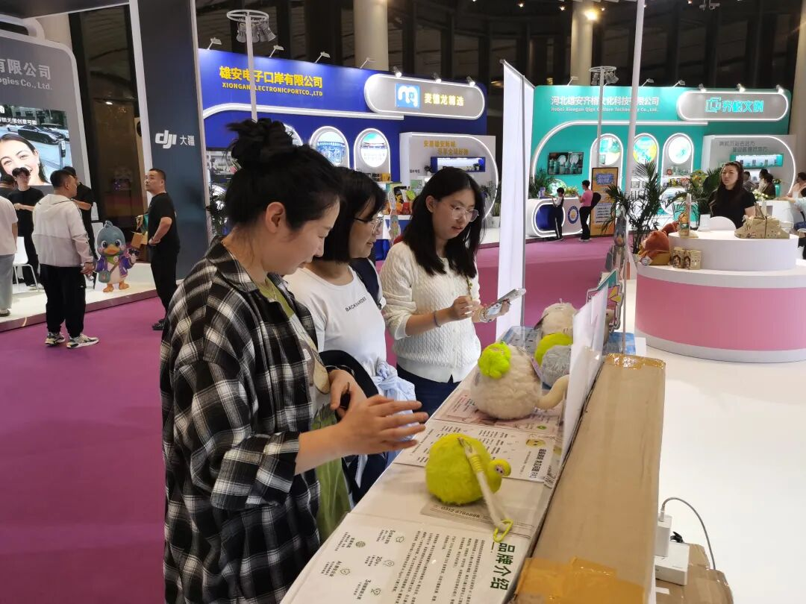

9月29日，首届雄安新区"金秋双月"购物节在中电建荷叶大厦前广场启幕，活动将持续至10月31日，33天全域联动促消费。"超级球球"作为受邀参展的现场特色展位之一，也是现场唯一的 AI 儿童产品。"超级球球"一亮相便人气高涨，成了市民游客争相打卡的热门点位。
走进展区，粉色系主题空间清新醒目，各种萌趣玩具整齐陈列。其中，超级球球AI儿童成长陪伴机器人备受青睐，明快的配色、有趣的设计让人挪不开眼，不少游客拿起球球细细把玩，纷纷驻足询问。



"这个球球也太可爱了！"展区里，孩子们的惊叹声此起彼伏。不少家长带着孩子前来体验，大家围在展台前与球球互动、拍照打卡，欢声笑语不断，现场气氛十分热烈。



超级球球的"人气"，不只因为它萌。作为一款 AI 儿童成长陪伴机器人，"超级球球"由超级有爱（杭州）智能科技有限公司研发：球形、毛绒、无屏幕，孩子可以抱、可以挂、可以带出门；它能识别情绪、共情对话，也会记住孩子的兴趣，陪孩子练习专注力、情绪力、抗挫力和表达力。球球想成为的，是让每个孩子愿意开口的伙伴。
品牌主张很简单——"超级球球，送孩子一生好性格。"
展位的热闹会散场，超级球球想做的事还在继续——陪孩子一天一天练成好习惯。愿每个孩子身边，都有一只愿意听他说话的球球。